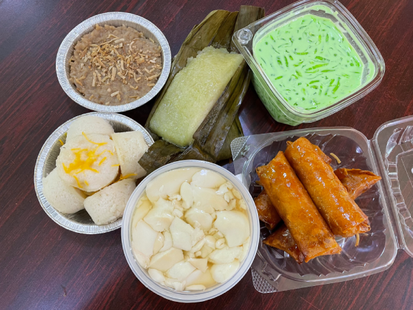
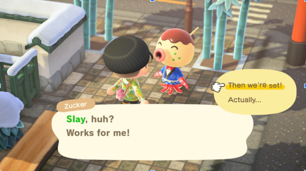

This image is interesting because it is a display of all the different kinds of Filipino desserts. By looking at this picture you can learn that there are a variety of dishes that use rice as the main ingredient and see how it can be changed to its own unique style. There is a mixture of really sweet and complementary desserts that many can learn about.
This image relates to my collection because it is a combination of desserts that can be found in the Filipino supermarket. I wanted to highlight the different regions that these desserts came from and I will add explanations on ingredients and common ways to make it. I am really passionate about sharing this topic to travel to Sacramento to find these sweet treats.
Filipino desserts always correlate to nostalgia for me. I think of the memories of learning how to make them with my grandma when I was young. Every party, there is always a dessert table that brings family together and there are so many because everyone has different tastes. Also, I love to bond with other Filipino American college students my age by asking them what their favorite ones are as an ice breaker and build community.

Fig.1 - Kathryn Corpuz, 2023
This image is a screen capture of Andre’s game play in animal crossing. They are interacting with one the villagers that lives on their island. Zucker is a takoyaki inspired octopus character with a fun personality.
I like to look into the detail of the outfit that the character is wearing. Since the character is customizable it is fun to look at what the player chose to dress their character. In addition, I liked to read the conversation between the characters with the chosen work “slay”. It is funny to see what players choose the catchphrase for their villager. I think it’s crucial to zoom into detail of how they also designed the layout of their island and the exterior design they placed to create the vibes they desired! The most obvious detail is that this game has a cute and friendly vibe for players to enjoy. A detail that is mysterious is what time of day is this capture because in the game time flies by quickly and connected to certain music that is enjoyable for game play.

Fig.2 - Andre Lam, 2023
Journal 3
Visual Thinking Strategies
February 9, 2023
In this article Gonchar explains this educational interactive activity that is helpful to engage student users. Some important tips to make this project stimulating for students would be to highlight details within the image and help nuture their curiosity by allowing them to work together with building upon their observations. This project is useful to help students be more critical with their reasoning and introduces them to new knowledge of specific topics. Visual thinking skills helps students practice their verbal skills and to use critical observation to dive into deeper understandings of topics. It's a great way to approach teaching with an interactive experience for them to enjoy learning.
An example of a site that does this technique well is this website by Adobe.This is an interactive digital gallery that showcases 3D art and artists behind the works. It has a big picture compilation and within the clump, you can highlight over to learn different subgroups. Once you click further into the detailed item, you get to visit a room like a museum. It was a very exciting site to navigate through and learned a lot about the 3D art sphere that is evolving quickly in this new age.
Journal 2
Overuse of Overlays
February 7, 2023
In this article Whitenton highlights key aspects of overlays and light boxes that often hinder a user experience. It is always important for accessiblity to be in the forefront when creating these elements. Examples include making them fit the screen fully and having clear labels and closing buttons for users.
It is also important to know when the best situations for overlays. It's useful when the user is prompted to do an action and when crucial info must be presented. Placement is valuable to understand the best positions becuase it's useful to fully show the content closer to the top so it's not cut off.
It's important to decipher for designers when it is needed for overlays or when they can just display content on the page. Reflecting on the five W's of what, who, when, and why it is important to use an overlay will exponentially make a user's experience smooother and less frustrating.
Journal 1
Best Practices for Form Design
January 31, 2023
In this article Ansari highlights key aspects that many forms lack and how to improve them. One highlight from the reading is to reduce as much confusion as possible by correctly labeling and putting examples outside the boxes. In addition, the sizes each submission should make the info that is needed.
It is also beneficial to know what features to add such as replacing a drop down with selection bubbles to make the user experience easier to interact with. Working on making designs accessible is one of the most important tips to remember, so always check contrat and text sizing to be legible for all users.
A site that has these tips implemented in their form layout is Mailchimp's signup page. They have correct format for labels outside the boxes to make it clear for users. Also, they have pop-up explanations when entering the username as a suggestion. The clean layout follows all the princlipes from this article well to have a smooth on-boarding experience.